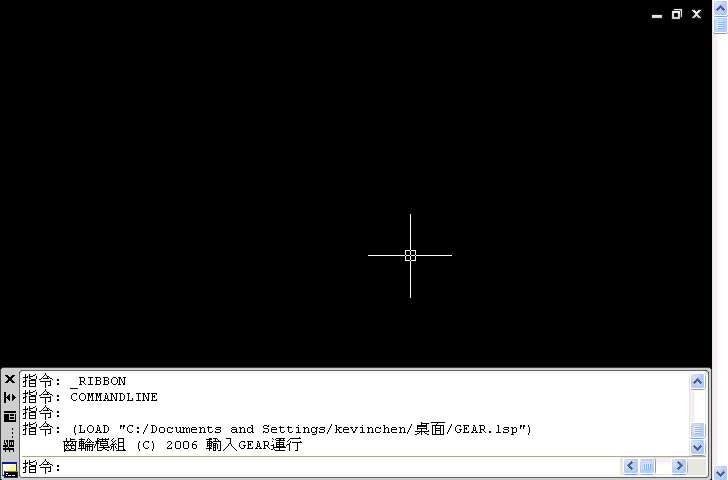

請先參考以下說明，有問題請再提出來討論~
1.AutoCAD並快速製作的功能，也就是你必須土法煉鋼一筆一筆的話，並沒有甚麼比較快的指令。
請參考以下作法(範例使用初步方式建構，需有實際真實尺寸才能準確):
全屏展示:
2.另外可以藉助程式來快速幫你繪製好齒輪，輸入GEAR指令建立18齒齒輪，做成面預後再擠出即可。請參考以下作法:

齒輪LISP程式下載:
http://www.autocad.com.tw/asp/ShowRecord.asp?WebName=AutoCAD&ID=13393
載入LISP應用程式:
http://tw.myblog.yahoo.com/tiger-apple/article?mid=1421
************************
有空的朋友請投一下票吧!
[票選]請問auto cad 3D齒輪怎麼畫?
http://tw.knowledge.yahoo.com/question/question?qid=1508110910942